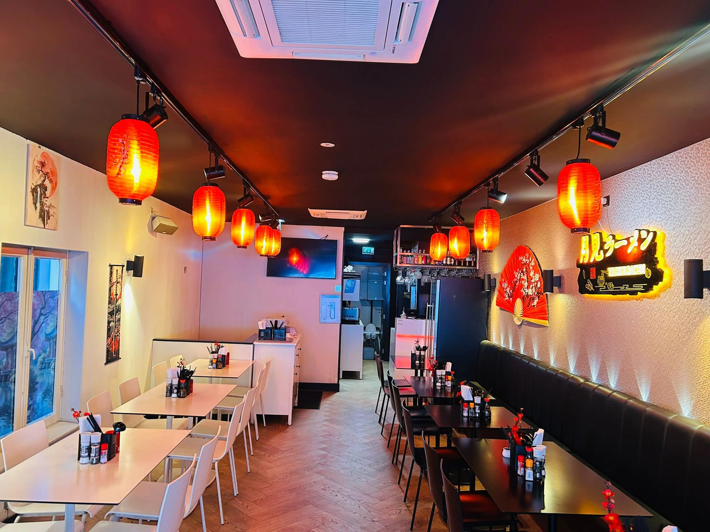
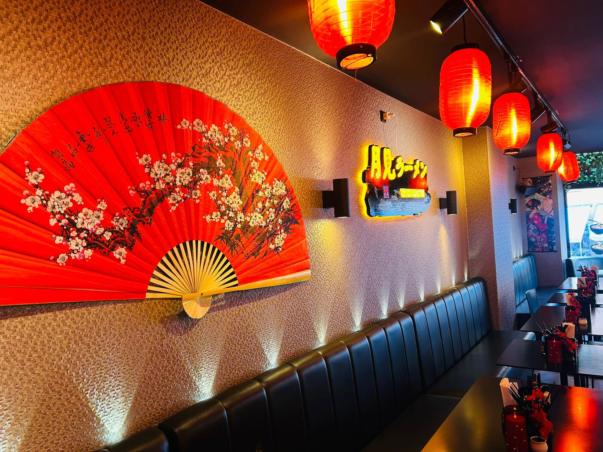
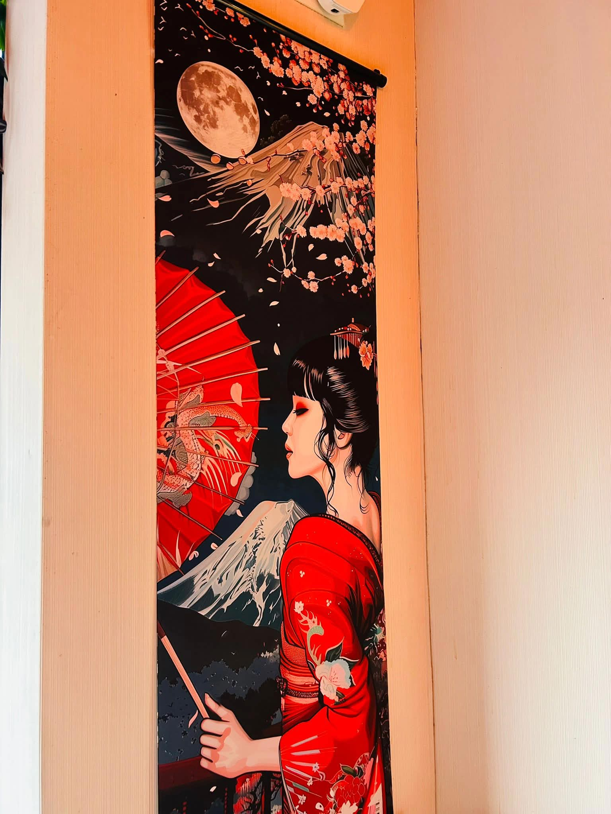
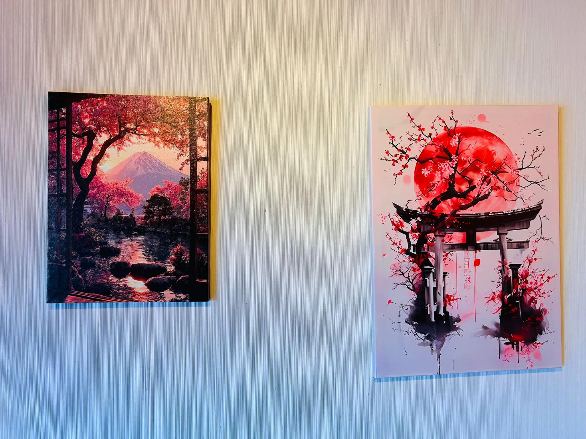

About us
Tsukimi Ramen
Tsukimi Ramen is a casual ramen spot located in the heart of Amsterdam, on the second floor of Damrak 45 — inside At James, which has been welcoming guests since 2011.
Inspired by the energy of the city, we offer a simple and welcoming space just above the busy streets. Step upstairs and take a break from the crowds.
Our focus is on fresh, quality ramen made for a quick, comfortable meal in the city.
Find us
We're upstairs
Located inside At James on Damrak 45, floor 2.
Step upstairs and discover Tsukimi Ramen.
Look for At James on Damrak 45 — we're on the second floor. Take the stairs up and you'll find us.




